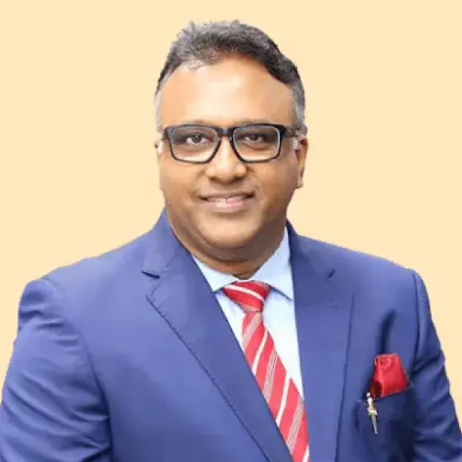

Home Prof. Dr. C. Raj Kumar

Prof. Dr. C. Raj Kumar
Vice Chancellor, O.P. Jindal Global University.
Professor (Dr.) C. Raj Kumar, a Rhodes Scholar, is the Founding Vice Chancellor of O.P. Jindal Global (Institution of Eminence Deemed To Be University) (JGU) in India. He was appointed as the VC at the age of 34 in 2009 when the university was established. JGU is one of only 20 universities in India and the only non-STEM university, which has been declared as an “Institution of Eminence” by the Government of India.
Professor Kumar is an accomplished legal scholar and works in the fields of human rights and development, comparative constitutional law, terrorism and national security, corruption and governance, law and disaster management, legal education and higher education. He has seven books and over hundred and fifty publications to his credit and has published widely in peer reviewed journals, law reviews in Australia, Hong Kong, India, Japan, Singapore, UK and the USA.
Professor Kumar has academic qualifications from the University of Oxford, Harvard University, University of Hong Kong, University of Delhi and Loyola College. He served as a faculty member at the School of Law of City University of Hong Kong, where he taught for many years. Professor Kumar was awarded the Rhodes Scholarship at the University of Oxford, UK, where he obtained his Bachelor of Civil Law (B.C.L.) degree; a Landon Gammon Fellowship at the Harvard Law School, USA, where he obtained his Master of Laws (LL.M.) degree and a James Souverine Gallo Memorial Scholarship at Harvard University. He received the Doctor of Legal Science (S.J.D.) from the University of Hong Kong. He also obtained a Bachelor of Laws (LL.B.) degree from the University of Delhi, India; and a Bachelor of Commerce (B.Com.) degree from the Loyola College, University of Madras, India.
Professor Kumar conceived the idea of establishing India’s first ‘Global University’ and with the visionary leadership and philanthropic support of Mr. Naveen Jindal, established JGU in Sonipat, Haryana in 2009. JGU has completed a decade and has grown into a multidisciplinary and research-oriented university with nine different schools relating to law, business, international affairs, public policy, liberal arts & humanities, journalism & communication, art & architecture, banking & finance and environment & sustainability. JGU has acquired a stellar reputation in India and abroad for its effort to promote excellence in teaching, research, capacity building and community service.
In recognition of its contributions, JGU was awarded the highest grade “A” by the National Assessment and Accreditation Council (NAAC). In 2018, JGU was granted “Autonomy” by the University Grants Commission (UGC) and the Ministry of Human Resource Development, Government of India becoming one of only two private universities in India to achieve this coveted recognition. JGU is also the Youngest Indian University to feature in the QS World University Rankings by breaking into the QS BRICS Rankings 2019 and QS Asia Rankings 2019. JGU is ranked among the top 800 universities in the world in the QS World University Rankings 2020.
The Jindal Global Law School has been ranked among the top 150 law schools in the world in the QS World University Rankings 2020 – Law. It is also ranked the Number 1 law school in India.
Professor Kumar’s scholarly articles have been published in the American University International Law Review, Asia Pacific Law Review, Australian Journal of Asian Law, Columbia Journal of Asian Law, Corporate Governance International, Denver Journal of International Law & Policy, Georgetown Journal of International Law, Hong Kong Lawyer, Human Rights Quarterly, Indian Journal of Criminology, Indian Journal of International Law, Indian Journal of Public Administration, ILSA Journal of International & Comparative Law, Indiana Journal of Global Legal Studies, Journal of the International Peace Research Institute, Journal of the National Human Rights Commission, Loyola of Los Angeles International and Comparative Law Review, Michigan State Journal of International Law, New England Journal of International and Comparative Law, Proceedings of the American Society of International Law, San Diego International Law Journal, Tulane Journal of International and Comparative Law, Tulsa Journal of Comparative and International Law and UC Davis Law Review. He has authored, co-authored, edited and co-edited seven books: The Future of Indian Universities (2017) (Editor-Oxford University Press); The Education President: Institution Building for Nation Building (2016) (Co-Author-Universal Law Publishing & LexisNexis); The President of India and the Governance of Higher Education Institutions (2016) (Co-Author-Universal Law Publishing & LexisNexis); Corruption and Human Rights in India: Comparative Perspectives on Transparency and Good Governance (2011) (Author-Oxford University Press); Human Rights and Development: Law, Policy and Governance (2006) (Co-Editor-LexisNexis); Tsunami and Disaster Management: Law and Governance (2006) (Co-Editor-Sweet & Maxwell Thomson); Human Rights, Justice and Constitutional Empowerment (2007) (Co-Editor-Oxford University Press).
Professor Kumar has contributed articles in newspapers and magazines published from Hong Kong, India and the UK, which include, South China Morning Post, The Standard, Frontline, The Hindu, Hindustan Times, Financial Express, The Tribune, The Pioneer, Seminar, Global-is-Asian, The Economic Times, The Times of India, The Indian Express, Deccan Herald, Deccan Chronicle, Economic & Political Weekly and Open Democracy. He has been interviewed on issues relating to law and justice, human rights and governance, and education by the media in Hong Kong, Japan and India, including radio and television: India Today TV, CNN IBN, News Now, Lok Sabha TV, Rajya Sabha TV, Star News, ATV, All India Radio, RTHK and NHK.
Professor Kumar has held consultancy assignments in the field of human rights and governance. He has been a Consultant to the United Nations University (UNU), Tokyo; United Nations Development Programme (UNDP); UN Office of the High Commissioner of Human Rights, Geneva; and the International Council for Human Rights Policy (ICHRP), Geneva. He has advised the Commission to Investigate Allegations of Bribery or Corruption (CIABOC) in Sri Lanka and the National Human Rights Commission (NHRC) in India on issues relating to corruption and good governance. Professor Kumar is an Attorney at Law and is admitted to the Bar Council of Delhi, India and the Bar of the State of New York, USA.
Professor Kumar also serves as the Founding Dean of Jindal Global Law School (JGLS) and Director of the International Institute for Higher Education Research & Capacity Building (IIHEd).
Education
- LL.B. (University of Delhi)
- B.C.L. (University of Oxford)
- LL.M. (Harvard University)
- S.J.D. (Hong Kong)